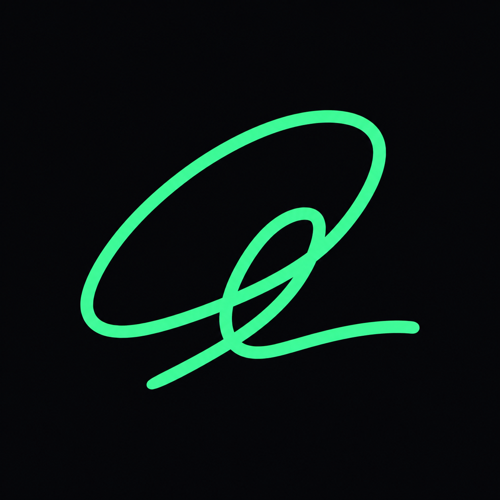
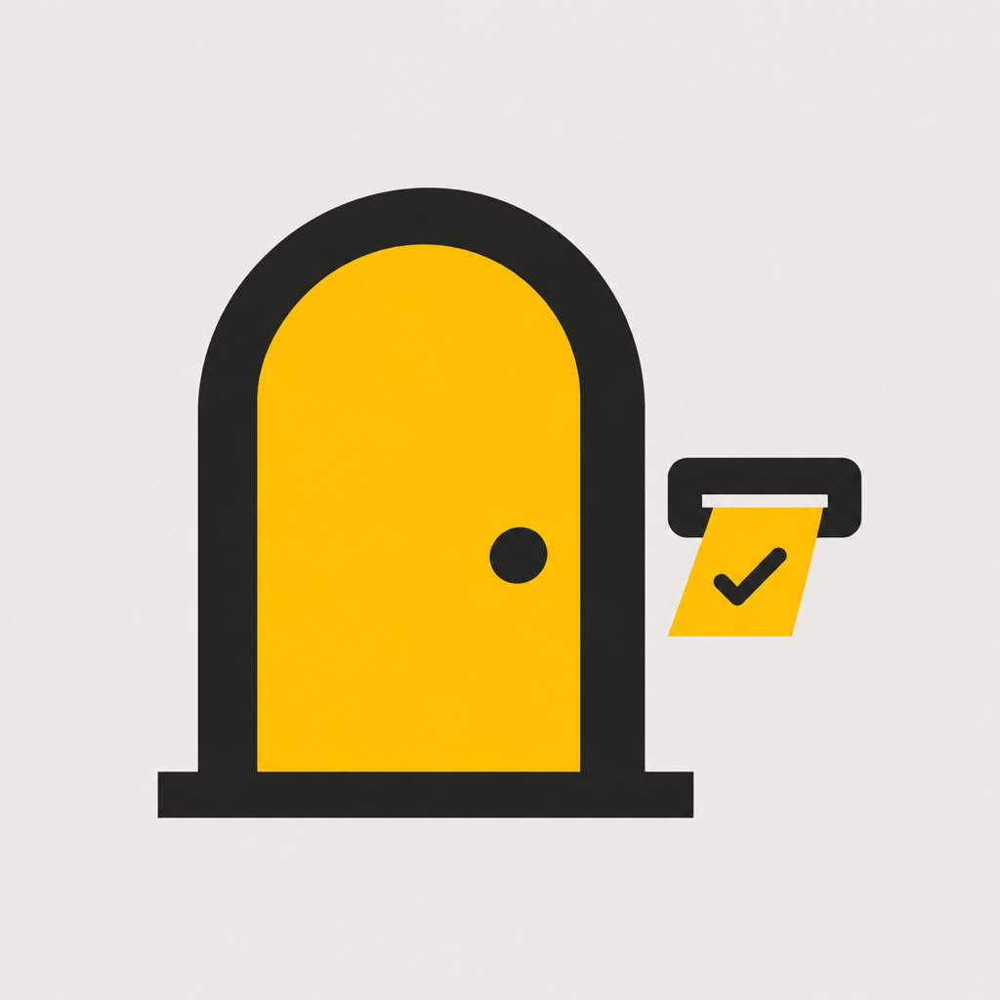

Four directions are available. Codex image_gen marks and themes the image. HTML sets the wordmarks. Pick one to polish.
The perforated tear-off stub is valid for one trip. It is spent after you tear it off.
Only the human holds the approval stamp. It leaves an ink mark on one named form.
The human's signature is a terminal-green pen stroke. It is the one thing the model cannot forge.

The door has a slot. A hook outside the model checks the slip before the risky call goes through.
